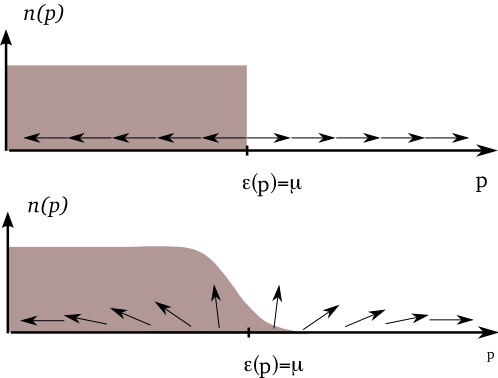
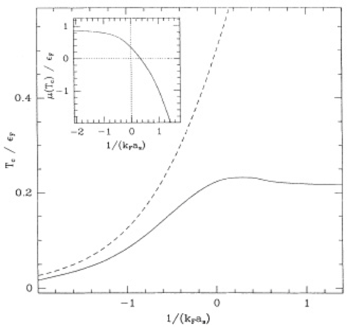

Superconductivity
Our grand tour of many body theories continues with Bardeen, Cooper and Schrieffer’s (BCS) theory of superconductivity, based on the idea that electrons in a superconductor bind to form Cooper pairs that behave like bosons. The phenomena of superconductivity and superfluidity are then closely linked.
1 Bosons as Fermion Pairs
So far, we have discussed Bose–Einstein condensation and superfluidity using models of bosonic particles. Can systems of fermions display the same phenomena? Experimentally, we already know that the answer must be yes, as an atom of He\(^4\) consists of protons, neutrons, and electrons – two of each – which are are all fermions. A He\(^4\) atom is a composite boson, but in many situations its internal structure is of no relevance.
To return to model systems, consider the Fermi gas Hamiltonian that we discussed in the last lecture
\[ H = \int d\mathbf{r}\left[ \sum_{s=\uparrow,\downarrow}\frac{1}{2m}\nabla\psi^\dagger_s\cdot\nabla\psi^{\vphantom{\dagger}}_s + U_0 \psi^\dagger_\uparrow\psi^\dagger_\downarrow\psi^{\vphantom{\dagger}}_\downarrow\psi^{\vphantom{\dagger}}_\uparrow\right]. \tag{1}\]
For a pair of particles of opposite spin, this is equivalent to
\[ H = -\frac{1}{2m}\left[\nabla_1^2+\nabla_2^2\right] + U_0\delta(\mathbf{r}_1-\mathbf{r}_2). \]
For \(U_0<0\) and sufficiently large, we expect a bound state to form with a symmetric spatial wavefunction and a spin singlet. Now consider a dilute gas of such bound pairs. ‘Dilute’ in this context means that the interparticle separation is large compared to the size of the bound state. In this limit, we expect to be able to treat the bound pairs as spinless bosons, which can then display all the usual phenomena associated with Bose gases.
The idea that superfluidity can arise in a system of fermions as a result of pairing was conjectured to explain the phenomenon of superconductivity in metals at low temperatures Schafroth (1954). If electrons could form pairs, then superconductivity could be understood as superfluidity of charge \(-2e\) bosons. Job done.
You may have spotted the problem with this idea: electrons actually repel each other due to the Coulomb interaction. A realistic description of electron pairing must involve a mechanism for attractive interactions. The 1957 realization of Bardeen, Cooper and Schrieffer (BCS) was that such an attraction is provided by the coupling of the electrons to phonons. For states near the Fermi surface, this attraction can actually overcome the Coulomb repulsion (once screening is accounted for, see Lecture 12. Problem Set 3 describes how this can occur in a simple model.
This is still not the whole story. The net attraction between electrons is still not strong enough to form a bound state, if we were just to consider isolated pair. BCS showed that in a gas of fermions at finite density, arbitrarily weak attraction is enough to cause pairing: it is a truly many body phenomenon. This was first demonstrated by Leon Cooper using a toy model that accounted for the existence of the Fermi sea in the pairing problem, and for this reason we speak of Cooper pairs.
So BCS got the Nobel prize (which conveniently can be split three ways) and their theory become one of the pillars of condensed matter physics. In this lecture we’ll discuss BCS theory using the model Hamiltonian Equation 1 with attractive short-ranged interactions. This is not a particularly realistic model of the combined phonon-mediated attraction and screened Coulomb repulsion, but displays the same physics. It is a good model for pairing of ultracold fermionic atoms, first observed in 2004 Regal, Greiner, and Jin (2004).
2 BCS Theory
2.1 The BCS Wavefunction
In momentum space our Hamiltonian Equation 1 has the form
\[ H =\sum_{\mathbf{k},s} \epsilon(\mathbf{k})a^\dagger_{\mathbf{k},s}a^{\vphantom{\dagger}}_{\mathbf{k},s} + \overbrace{\frac{U_0}{V}\sum_{\mathbf{k}_1+\mathbf{k}_2=\mathbf{k}_3+\mathbf{k}_4} a^\dagger_{\mathbf{k}_1,\uparrow}a^\dagger_{\mathbf{k}_2,\downarrow}a^{\vphantom{\dagger}}_{\mathbf{k}_3,\downarrow}a^{\vphantom{\dagger}}_{\mathbf{k}_4,\uparrow}}^{\equiv H_\text{int}}, \]
We take the interaction between the two species to be attractive \(U_0<0\). The ground state of the non-interacting problem is
\[ \lvert{\text{FS}}\rangle=\prod_{|\mathbf{p}|<k_\text{F}} a^\dagger_{\mathbf{p}\uparrow}a^\dagger_{-\mathbf{p}\downarrow}\lvert{\text{VAC}}\rangle. \]
The application of the interaction Hamiltonian \(H_\text{int}\) generates terms of the form
\[ a^\dagger_{\mathbf{p}+\mathbf{q}\uparrow}a^\dagger_{-\mathbf{p}\downarrow}a^{\vphantom{\dagger}}_{-\mathbf{p}'\downarrow}a^{\vphantom{\dagger}}_{\mathbf{p}'+\mathbf{q}\uparrow}\lvert{\text{FS}}\rangle.\qquad |\mathbf{p}|,|\mathbf{p}+\mathbf{q}|>k_\text{F},\, |\mathbf{p}'|,|\mathbf{p}'+\mathbf{q}|<k_\text{F}. \]
Note the difference from the Bose case: because the state \(\mathbf{p}=0\) plays no special role – like every other state below the Fermi surface it is occupied with one fermion of each species – we do not just create pair excitations with zero centre of mass momentum \(\mathbf{q}=0\). Nevertheless, the BCS theory makes the assumption that the ground state involves a superposition of zero momentum pairs only. We can write such a state very generally as \[ \lvert{\text{pair}}\rangle\equiv\sum_{\sum_\mathbf{p}n^P_\mathbf{p}=N/2} c_{\{n^P_{\mathbf{p}}\}} \prod_{\mathbf{p}}\left[a^\dagger_{\mathbf{p}\uparrow}a^\dagger_{-\mathbf{p}\downarrow}\right]^ {n_{\mathbf{p}}}\lvert{\text{VAC}}\rangle, \tag{2}\]
where the numbers \(n_{\mathbf{p}}^P\) are either \(0\) or \(1\) (why?). Note that in writing Equation 2 the number of each species is assumed to be exactly \(N/2\). Restricting ourselves to states of this form means that \[ \langle{\text{pair}}\rvert H_\text{int} \lvert \text{pair} \rangle = \frac{U_0}{V}N_\uparrow N_\downarrow+\langle{\text{pair}}\rvert \tilde H_{\text{int}} \lvert \text{pair} \rangle, \] where the first term is the Hartree–Fock energy and \[ \tilde H_{\text{int}}=\frac{U_0}{V}\sum_{\mathbf{p}, \mathbf{p}'}a^\dagger_ {\mathbf{p}\uparrow}a^\dagger_{-\mathbf{p}\downarrow}a^{\vphantom{\dagger}}_{-\mathbf{p}'\downarrow}a^{\vphantom{\dagger}}_{\mathbf{p}'\uparrow}, \label{super_bcsH} \]
It’s useful to introduce the operator \(b^\dagger_\mathbf{p}=a^\dagger_{\mathbf{p}\uparrow}a^\dagger_{-\mathbf{p} \downarrow}\) and its conjugate \(b^{\vphantom{\dagger}}_\mathbf{p}=a^{\vphantom{\dagger}}_{-\mathbf{p},\downarrow}a^{\vphantom{\dagger}}_{\mathbf{p}\uparrow}\), that respectively create and destroy a \(\left(\mathbf{p}\uparrow,-\mathbf{p}\downarrow\right)\) pair. Because our pair ansatz Equation 2 only includes amplitudes for a given \(\left(+\mathbf{p},-\mathbf{p}\right)\) pair of momenta having either none or two fermions, we can compute expectations using the pair Hamiltonian \[ H_{\text{pair}}=2\sum_{\mathbf{p}}\epsilon_{\mathbf{p}}b^\dagger_\mathbf{p}b^{\vphantom{\dagger}}_\mathbf{p}+\frac{U_0}{V}\sum_{\mathbf{p},\mathbf{p}'} b^\dagger_\mathbf{p} b^{\vphantom{\dagger}}_{\mathbf{p}'}, \tag{3}\] where \(2b^\dagger_\mathbf{p}b^{\vphantom{\dagger}}_\mathbf{p}= a^\dagger_{\mathbf{p},\uparrow}a^{\vphantom{\dagger}}_{\mathbf{p},\uparrow}+a^\dagger_{-\mathbf{p},\downarrow}a^{\vphantom{\dagger}}_{-\mathbf{p},\downarrow}\) on paired states.
Now, can we solve Equation 3? This may now look like a quadratic problem, but the pair operators \(b^{\vphantom{\dagger}}_\mathbf{p}\), while commuting at different momenta \[ [b^{\vphantom{\dagger}}_\mathbf{p},b^{\vphantom{\dagger}}_{\mathbf{p}'}]=[b^\dagger_\mathbf{p},b^\dagger_{\mathbf{p}'}]=[b^\dagger_\mathbf{p},b^{\vphantom{\dagger}}_{\mathbf{p}'}]=0\qquad \mathbf{p}\neq\mathbf{p}', \]
obey the hardcore constraint
\[ (b^\dagger_\mathbf{p})^2=0, \tag{4}\]
which is a result of \(b^\dagger\) being composed of a pair of fermions obeying the exclusion principle. Nevertheless, given that a pair that `hops’ into a level at \(\mathbf{p}\) could come from any other level \(\mathbf{p}'\), it seems reasonable to try, as a variational state, one in which the amplitudes for the occupancy of each level are uncorrelated
\[ \lvert{N \text{ pair}}\rangle\equiv\left[\sum_\mathbf{p}c_\mathbf{p}b^\dagger_\mathbf{p}\right]^{N/2}\lvert{\text{VAC}}\rangle \tag{5}\]
corresponding to Equation 2 but with a set of coefficients \(c_{\{n^P_\mathbf{p}\}}\) that factorizes. Finding the variational energy of Equation 5 is still a tricky problem. For instance, what is the expectation value of the kinetic energy?
\[ \mathrm{K.E}=2\sum_\mathbf{p}\epsilon_{\mathbf{p}}\langle b^\dagger_\mathbf{p}b^{\vphantom{\dagger}}_\mathbf{p}\rangle\equiv 2\sum_\mathbf{p}\epsilon_{\mathbf{p}} \langle n^P_ \mathbf{p}\rangle, \tag{6}\]
Finding the average number of pairs \(\langle n^P_\mathbf{p}\rangle\) in Equation 5 is however not obvious. Instead, we follow the route taken by BCS, and consider instead the normalized wavefunction
\[ \lvert{\text{BCS}}\rangle =\prod_\mathbf{p}\left[v_\mathbf{p}b^\dagger_\mathbf{p}+u_\mathbf{p}\right]\lvert{\text{VAC}}\rangle\qquad |u_\mathbf{p}|^2+|v_\mathbf{p}| ^2=1. \tag{7}\]
This is a superposition of states with different total number of particles. Apart from the overall normalization, the projection of Equation 7 onto a fixed number \(N\) of particles corresponds exactly to Equation 5 if \(c_\mathbf{p}=v_\mathbf{p}/u_\mathbf{p}\). Since Equation 7 is a product of factors corresponding to each momentum separately, \(\langle n^P_\mathbf{p}\rangle\) is easily found to be \(v_\mathbf{p}^2\). The total variational energy of this state is
\[ \langle{\text{BCS}}\rvert H \lvert \text{BCS} \rangle=2\sum_\mathbf{p}\epsilon_{\mathbf{p}}|v_\mathbf{p}|^2+\frac{U_0}{V}\sum_{\mathbf{p},\mathbf{p}'}u^*_\mathbf{p}v_ \mathbf{p}u_{\mathbf{p}'}v^*_{\mathbf{p}'}. \tag{8}\]
What about our use of a non-conserving wavefunction? The expectation value of any operator that itself conserves the number of particles can evidently be written
\[ \langle{\text{BCS}}\rvert \mathcal{O} \lvert \text{BCS} \rangle=\sum_N P_N \langle{N \text{ pair}}\rvert \mathcal{O} \lvert N\text{ pair} \rangle, \]
The probabilities \(P_N\) are
\[ P_N=\sum_{\sum n^P_\mathbf{p}=N/2}\prod_\mathbf{p}\left[n^P_\mathbf{p}|v_\mathbf{p}|^2+\left(1-n^P_\mathbf{p}\right)|u_\mathbf{p}|^2 \right], \]
which is strongly peaked around \(\langle N \rangle=2\sum_\mathbf{p}|v_\mathbf{p}|^2=2\sum_\mathbf{p}\langle n^P_\mathbf{p} \rangle\), with a variance that is \(O(N)\). Thus at large \(N\)
\[ \langle{\text{BCS}}\rvert \mathcal{O} \lvert \text{BCS} \rangle\to \langle{\langle N\rangle \text{ pair}}\rvert \mathcal{O} \lvert \langle N\rangle\text{ pair} \rangle. \]
In the thermodynamic limit, we might as well work with the non-conserving form Equation 7. To fix the number of particles, we should introduce a chemical potential into the Hamiltonian. Note that we didn’t have to do this with the Bogoliubov theory as we fixed the number of particles in the condensate \(N_0\).
There is an interesting alternative interpretation of the pair Hamiltonian Equation 3. Acting within the pair subspace, the three operators \(b^{\vphantom{\dagger}}_\mathbf{p}\), \(b^\dagger_\mathbf{p}\), and \(b^\dagger_\mathbf{p}b^{\vphantom{\dagger}}_\mathbf{p}-1/2\) behave as the components of a spin-\(1/2\)
\[ S_\mathbf{p}^+ \equiv b^\dagger_\mathbf{p},\quad S_\mathbf{p}^- \equiv b^{\vphantom{\dagger}}_\mathbf{p},\quad S^z_\mathbf{p}= b^\dagger_\mathbf{p}b^{\vphantom{\dagger}}_\mathbf{p}-1/2, \]
on account of the commutation relations
\[ \begin{aligned} \left[b^\dagger_\mathbf{p},b^{\vphantom{\dagger}}_\mathbf{p}\right]=2\left(b^\dagger_\mathbf{p}b^{\vphantom{\dagger}}_\mathbf{p}-1/2\right)\nonumber\\ \left[b^\dagger_\mathbf{p},\left(b^\dagger_\mathbf{p}b^{\vphantom{\dagger}}_\mathbf{p}-1/2\right)\right]=-b^\dagger_\mathbf{p}. \end{aligned} \]
This representation is sometimes called Anderson spins. In this way we can write Equation 3 as a spin chain
\[ H_{\text{pair}}-\mu N=2\sum_\mathbf{p}\xi({\mathbf{p}})S_\mathbf{p}^z+\frac{U_0}{V}\sum_{\mathbf{p},\mathbf{p}'}S^+_\mathbf{p}S^-_{\mathbf{p}'}, \]
where we have included the chemical potential by defining \(\xi_\mathbf{p}\equiv\epsilon(\mathbf{p})-\mu\). If we parameterize \(\left(v_\mathbf{p},u_\mathbf{p}\right)\) as \((\cos(\theta/2)e^{i\varphi/2},\sin(\theta/2)e^{-i\varphi/2})\) then the variational energy Equation 8 has the form (except for a constant)
\[ \langle{\text{BCS}}\rvert H \lvert \text{BCS} \rangle=\sum_\mathbf{p}\xi_\mathbf{p}\cos\theta_\mathbf{p}+\frac{U_0}{4V}\sum_{\mathbf{p},\mathbf{p}'}\sin \theta_\mathbf{p}\sin\theta_{\mathbf{p}'}\cos\left(\varphi_\mathbf{p}-\varphi_{\mathbf{p}'}\right). \tag{9}\]
The interpretation of Equation 9 is the following. The first term tends to align the spins with the z-axis in the - direction for \(\xi_\mathbf{p}<0\) and in the + direction for \(\xi_\mathbf{p}>0\). On the other hand, the second term, originating from the potential energy between the constituents of a pair, wants the spins to lie in the x-y plane. Of course, the spins are really quantum mechanical spin-1/2 operators. The direction corresponds to the direction of \(\langle \mathbf{S}\rangle\) in the BCS state.
It remains to actually minimize the energy Equation 8 to determine the \(u\)’s and \(v\)’s, or equivalently, the configurations of the spins. For \(U_0>0\) (repulsive interactions), the spins all point in the \(\pm z\) direction, forming a ‘domain wall’ where \(\xi_{\mathbf{p}}\) changes sign at the Fermi surface. The relationship between the spin picture and the average number of pairs is
\[ \langle n^P_{\mathbf{p}}\rangle=v_\mathbf{p}^2=\left[1+\cos\theta_\mathbf{p}\right]/2, \]
so we see that this corresponds simply to a sharp fermi step. For \(U_0<0\), the system can lower its energy by taking \(\sin\theta_\mathbf{p}\neq 0\). The lowering of the interaction energy more than compensates the increase in kinetic energy that comes from smearing the step, see Equation 6. Clearly all of the angles \(\varphi_\mathbf{p}\), describing the angle in the x-y plane, should be equal. Taking the extremum of Equation 9 with respect to the angles \(\theta_{\mathbf{p}}\) gives the condition

\[ \xi_{\mathbf{p}}\sin\theta_\mathbf{p}+|\Delta|\cos\theta_\mathbf{p}=0, \]
where it is convenient to introduce the gap parameter
\[ \Delta=-\frac{U_0}{2V}\sum_\mathbf{p}e^{i\varphi}\sin\theta_\mathbf{p}=-\frac{U_0}{V}\sum_\mathbf{p}u^*_\mathbf{p}v_\mathbf{p}. \]
Thus we have
\[ \cos\theta_\mathbf{p}=-\frac{\xi_{\mathbf{p}}}{E_\mathbf{p}},\qquad \sin\theta_\mathbf{p}=\frac{|\Delta|}{E_\mathbf{p}}, \qquad E_\mathbf{p}=\sqrt{\xi (\mathbf{p})^2+|\Delta|^2}. \]
The meaning of these solutions is very simple. They correspond to the alignment of the spin vector with the direction of the effective `magnetic field’
\[ \left(\mathrm{Re}\,\Delta,\mathrm{Im}\,\Delta,\xi_\mathbf{p}\right) \tag{10}\]
To be self-consistent, the solution must further satisfy the gap equation
\[ \Delta=-\frac{U_0}{2V}\sum_\mathbf{p}\frac{\Delta}{E_\mathbf{p}}. \tag{11}\]
It is clear that for \(U_0>0\) there are no non-trivial solutions (\(\Delta=0\) always), while for any \(U_0<0\) there is always a solution at finite \(\Delta\) (One can also show that it corresponds to a minimum of energy. In the repulsive case, the solution at \(\Delta=0\), which always exists, corresponds to a maximum). Passing to the continuum limit we have
\[ \Delta=-\frac{U_0}{2}\int \frac{d\mathbf{p}}{\left(2\pi\right)^3} \frac{\Delta}{E_\mathbf{p}} \tag{12}\]
This integral is divergent in the ultraviolet. We turn to the question of how to regularize it in the next section. More significant, however, is the dependence of the right hand side on \(\Delta\) for small $ $. This is
\[ \sim-\frac{U_0}{2}\nu(\mu)\Delta\log \Lambda/\Delta, \]
where \(\Lambda\) is the UV cut-off (we will shortly identify it with the Fermi energy), and \(\nu(\mu)\) is the density of states per spin component at the chemical potential. This shows that no matter how small the attraction \(U_0<0\), there will always be a solution of Equation 12 with finite \(\Delta\). This is the essence of the Cooper phenomenon. It should be compared with the situation in which there are not a macroscopically large number of particles present. In that case \(\mu=0\), so that \(\xi_{\mathbf{p}}=\epsilon(\mathbf{p})>0\). Then the right hand side of Equation 12 has no divergence at low energies because the density of states \(\nu(E)\) vanishes. The finite value of \(\Delta\) is thus seen to be a consequence of the fermi sea.
We have shown that the BCS state, consisting of a superposition of zero momentum pairs, is a better variational state than the Fermi sea for arbitrarily weak attractive interactions. Further, it coincides with the Fermi sea at zero interaction, suggesting a smooth evolution of the ground state as interactions are switched on. What, if anything, does this have to do with the strong coupling picture of tightly bound bosonic pairs in a dilute gas that we gave in the introduction?
2.2 Discussion: Heisenberg’s Problem
2.3 The BCS-BEC Crossover
Surprisingly, the wavefunctions in the two limits are the same! This can be seen from the first quantized form of the number conserving wavefunction Equation 5
\[ \lvert{N \text{ pair}}\rangle=\sum_P (-1)^P \prod_{i,j=1}^{N/2} \varphi(\mathbf{r}^\uparrow_{i}-\mathbf{r}^\downarrow_{P(j)}), \tag{13}\]
where \(\varphi_\mathbf{p}=v_\mathbf{p}/u_\mathbf{p}\), and \(\mathbf{r}^{\uparrow,\downarrow}_j\) are the positions of the spin up and spin down fermions, and we sum over all permutations of \(N/2\) objects (assuming \(N\) is even).
Do you understand where this comes from?
At weak coupling the extent of the `pair wavefunction’ \(\varphi(\mathbf{r})\) is large compared to the separation between pairs. In this limit the antisymmetrization operation, required by the exclusion principle, plays a dominant role, as we have seen. When the pair wavefunction \(\varphi(\mathbf{r})\) has a much smaller extent than the typical separation between pairs, we can expect that the antisymmetrization operation in Equation 13 is not too important, as two fermions of the same type rarely overlap. In this limit, any given momentum state has a low average occupancy, and the hardcore constraint Equation 4 does not play a significant role. Then Equation 3 can really be thought of as a Hamiltonian for isolated pairs, with the corresponding binding energy. The resulting wavefunction is then essentially a Gross-Pitaevskii state of molecules. This all suggests that the BCS state is smoothly connected to the Bose–Einstein condensate (BEC), though the BCS-BEC crossover.
To see how this works in detail we need to address the issue of regularizing Equation 11. The details are given in the Appendix, but the conclusion is very simple. The gap equation can be written in terms of the scattering length \(a\) (if you haven’t met scattering theory before, the meaning of this quantity is explained in the Appendix too) of the two-particle potential instead of interaction strength \(U_0\)
\[ -\frac{m}{4\pi a}\Delta=\frac{1}{V}\sum_{\mathbf{p}}\left[\frac{\Delta}{2E_{\mathbf{p}'}}-\frac{\Delta} {2\epsilon_{\mathbf{p}'}}\right]. \tag{14}\]
The nice thing about this new equation is that, on account of the second term in the square brackets, the ultraviolet divergence has been eliminated.
In the weak-coupling limit, the gap \(\Delta\) is expected to be much smaller than the Fermi energy, and the chemical potential is just equal to the Fermi energy \(E_F=k_\text{F}^2/2m\). The integral in Equation 14 can then be done explicitly to give the gap
\[ \Delta_{\mathrm{BCS}}=\frac{8}{e^2}E_F\exp\left[-\frac{\pi}{2|k_\text{F} a|}\right] \tag{15}\]
Outside of the weak-coupling limit, we have to account for a change in the chemical potential, in order to keep a fixed density. This is apparent from the equation
\[ N=2\sum_\mathbf{p}\langle n^P_\mathbf{p}\rangle=2\sum_\mathbf{p}v_{\mathbf{p}}^2=\sum_\mathbf{p}\left[1-\frac{\xi_{\mathbf{p}}}{E_\mathbf{p}}\right] \tag{16}\]
The two equations Equation 14 and Equation 16 are conveniently cast in the dimensionless form
\[ \begin{aligned} \frac{\pi}{2k_\text{F} a}=\int_0^{\infty} dx \left[1-\frac{x^2}{\sqrt{(x^2-\mu)^2+\Delta_0^2}} \right] \nonumber\\ \frac{2}{3}=\int_0^{\infty} dx\, x^2\left[1-\frac{x^2-\mu}{\sqrt{(x^2-\mu)^2+\Delta_0^2}}\right] \end{aligned} \]
where \(\mu\) and \(\Delta_0\) are measured in units of \(E_F=p_F^2/2m\), and the unit of length is \(k_\text{F}^{-1}\). In these units the total density of particles of both types is \(1/3\pi^2\).
The point \(1/k_\text{F}a=0\), where the scattering length diverges, corresponds to the formation of a bound state. This is an interesting part of the phase diagram, because here (if the temperature is zero) there is only one energy scale (the Fermi energy) and only one length scale (the fermi wavelength). All quantities such as \(\Delta\) and \(\mu\) are simply some universal fraction of the Fermi energy. In particular the equation of state of the system is
\[ E/V=\alpha\frac{3}{5}E_Fn\propto n^{5/3}. \]
The numerical factors are to emphasize the resemblance of the unitary gas to the free fermi gas, where \(\alpha=1\). The mean field theory above gives \(\alpha=0.59\), while a Quantum Monte Carlo calculation found \(\alpha=0.44\pm0.01\). There is of course no reason to believe the quantitative predictions of the mean-field theory in the region where interactions are so strong.
2.4 Quasiparticle Excitations
Like the Bogoliubov theory, this BCS theory also lets us discuss excitations out of the ground state. We didn’t solve the BCS hamiltonian by a Bogoliubov transformation, as is often done, but we can introduce the Bogoliubov-type excitations after the fact. Recalling the BCS state \[ \lvert{\text{BCS}}\rangle =\prod_\mathbf{p}\left[v_\mathbf{p}a^\dagger_{\mathbf{p}\uparrow}a^\dagger_{-\mathbf{p}\downarrow}+u_\mathbf{p}\right]\lvert{\text{VAC}}\rangle, \]
it’s easy to see that the operators
\[ \begin{aligned} \alpha^{\vphantom{\dagger}}_{\mathbf{p}\uparrow}&=u_\mathbf{p}a^{\vphantom{\dagger}}_{\mathbf{p}\uparrow}-v_\mathbf{p}a^\dagger_{-\mathbf{p}\downarrow}\nonumber\\ \alpha^{\vphantom{\dagger}}_{\mathbf{p}\downarrow}&=u_{-\mathbf{p}}a^{\vphantom{\dagger}}_{\mathbf{p}\downarrow}+v_{-\mathbf{p}}a^\dagger_{-\mathbf{p}\uparrow}, \end{aligned} \]
satisfy the canonical fermion anticommutation relations and annihilate the BCS state
\[ \alpha^{\vphantom{\dagger}}_{\mathbf{p},s}\lvert{\text{BCS}}\rangle\rangle=0. \]
Consider the state
\[ \lvert{\mathbf{p},s}\rangle=\alpha^\dagger_{\mathbf{p},s}\lvert{\text{BCS}}\rangle=a^\dagger_{\mathbf{p},s}\prod_{\mathbf{p}'\neq \mathbf{p}} \left[v_{\mathbf{p}'}a^\dagger_ {\mathbf{p}'\uparrow}a^\dagger_{-\mathbf{p}'\downarrow}+u_{\mathbf{p}'}\right]\lvert{\text{VAC}}\rangle, \]
corresponding to the momentum state \(\mathbf{p}\) certainly containing one particle with (pseudo-)spin \(s\), and the \(\left(-\mathbf{p},-s\right)\) state certainly being empty. The result is an eigenstate of momentum and spin, but is it an energy eigenstate, and thus a sharply defined excitation? Note that if we chose \(s=\uparrow\) so that the \(\left(\mathbf{p},\uparrow\right)\) state is certainly occupied it means that \(a^\dagger_{\mathbf{p} \uparrow}a^\dagger_{-\mathbf{p}\downarrow}\lvert{\mathbf{p},\uparrow}\rangle=0\), so that the corresponding term no longer appears in the interaction term when it is applied to this state. The level is said to be `blocked’. Thus it certainly is an eigenstate of the pair problem, if \(\lvert{\text{BCS}}\rangle\) is. What is its energy? We have to take into account the kinetic energy as well as the loss of attractive interaction energy, see Equation 9
\[ E_{s}(\mathbf{p})=\xi_{\mathbf{p}}[\overbrace{\left(1-\langle n^P_\mathbf{p}\rangle\right)}^{\left(\mathbf{p},s\right)\,\mathrm{occupied}} \overbrace{-\langle n^P_\mathbf{p}\rangle}^{\left(-\mathbf{p},-s\right)\,\mathrm{empty}}]+\overbrace{\Delta\sin\theta_ \mathbf{p}}^{\mathrm{`blocking'}}=E_{\mathbf{p}} \]
Note that these quasiparticle excitations always have a gap \(\Delta_{s}\) given by
\[ \Delta_s=\min_\mathbf{p}E_\mathbf{p}=\begin{cases} \Delta, & \mu>0,\\ \sqrt{\Delta^2+\mu^2},& \mu<0. \end{cases} \]
As \(\mu\) turns from positive to negative as we pass from BCS to BEC (see the above figure, the density of states of the quasiparticle excitations turns from having a square root singularity \(\nu(\epsilon)\sim \left(\epsilon-\Delta_s\right)^{-1/2}\) to vanishing like a square root \(\nu(\epsilon)\sim \left(\epsilon-\Delta_s\right)^{1/2}\).
3 Appendix
3.1 Regularizing the Gap Equation
The gap equation Equation 11 has an ultraviolet divergence – which we also encountered in the Bose gas – that is really a two body effect that arises from our model \(\delta\)-function potential. To see why this is so, consider the two particle Schrödinger equation
\[ -\frac{1}{2m}\left[\nabla_1^2+\nabla^2\right]\Psi(\mathbf{r}_1,\mathbf{r}_2) + U(\mathbf{r}_1-\mathbf{r}_2)\Psi(\mathbf{r}_1,\mathbf{r}_2)=E\Psi(\mathbf{r}_1,\mathbf{r}_2), \]
now with a general two-body potential \(U(\mathbf{r}_1-\mathbf{r}_2)\). In terms of the relative coordinate \(\mathbf{r}=\mathbf{r}_1-\mathbf{r}_2\) this becomes
\[ -\frac{\nabla^2}{m}\Psi(\mathbf{r}) + U(\mathbf{r})\Psi(\mathbf{r})=E\Psi(\mathbf{r}), \]
corresponding to a reduced mass of \(\mu = m/2\). In scattering problems we look for solutions of the form
\[ \Psi(\mathbf{r}) = \Psi_\text{free}(\mathbf{r}) + \Psi_\text{scatt}(\mathbf{r}), \]
where \(\Psi_\text{free}(\mathbf{r})\) solves the free particle equation, giving the inhomogenous equation for \(\Psi_\text{scatt}(\mathbf{r})\)
\[ \left[E-\frac{\nabla^2}{m}\right]\Psi_\text{scatt}(\mathbf{r}) + U(\mathbf{r})\Psi_\text{scatt}(\mathbf{r})=-U(\mathbf{r})\Psi_\text{free}(\mathbf{r}). \tag{17}\]
It is a standard result of scattering theory that the zero energy wavefunction as the form
\[ \Psi(\mathbf{r})\xrightarrow{|\mathbf{r}|\gg r_0} \overbrace{1}^{\Psi_\text{free}} - \overbrace{\frac{a}{|\mathbf{r}|}}^{\Psi_\text{scatt}} \]
where \(a\) is the (s-wave) scattering length, and \(r_0\) is the range of the potential. This corresponds to the behaviour in Fourier space
\[ \tilde\Psi_\text{scatt}(\mathbf{k})\xrightarrow{|\mathbf{k}|\ll r_0^{-1}} \frac{4\pi a}{|\mathbf{k}|^2} \]
Returning to the BCS problem, it’s not hard to see that with a general potential the gap parameter is now momentum dependent, leading to a gap equation
\[ \Delta_\mathbf{p}=-\frac{1}{2}\int \frac{d\mathbf{p}'}{(2\pi)^3}\tilde U(\mathbf{p}-\mathbf{p}')\frac{\Delta_{\mathbf{p}'}}{E_{\mathbf{p}'}}. \tag{18}\]
The solution of Equation 18 is in general very difficult, but it can be greatly simplified if we assume that the range of the potential \(U(\mathbf{r})\) is the shortest length scale in the problem. With this assumption we can write Equation 11
\[ \begin{aligned} \Delta_\mathbf{p}+\frac{1}{V}\sum_{\mathbf{p}'}U(\mathbf{p}-\mathbf{p}')\frac{\Delta_{\mathbf{p}'}}{2\epsilon_{\mathbf{p}'}}&=-\frac{1}{V}\sum_{\mathbf{p}'} \left[U_0(\mathbf{p})\frac{\Delta_{\mathbf{p}'}}{2E_{\mathbf{p}'}}-U(\mathbf{p}-\mathbf{p}')\frac{\Delta_{\mathbf{p}'}}{2\epsilon_ {\mathbf{p}'}}\right]\nonumber\\ &=-\frac{U_0(\mathbf{p})}{V}\sum_{\mathbf{p}'} \left[\frac{\Delta_{0}}{2E_{\mathbf{p}'}}-\frac{\Delta_{0}}{2\epsilon_ {\mathbf{p}'}}\right]. \end{aligned} \tag{19}\]
We have added the same term to both sides. However, the integral on the right hand side converges on a scale set by the momentum corresponding to the larger of \(\Delta_\mathbf{p}\) or \(\mu\), which by assumption is much less than the scale on which \(U_0(\mathbf{p})\) varies, and justifies replacing \(U_0(\mathbf{p}-\mathbf{p}')\) with \(U_0(\mathbf{p})\), and \(\Delta_{\mathbf{p}'}\) with \(\Delta_0\).
By comparing the Fourier transform of Equation 17 at \(E=0\) and Equation 19, we can conclude
\[ \Delta_\mathbf{p}=\frac{\Delta_0\mathbf{p}^2}{4\pi a} \tilde\Psi_\text{scatt}(\mathbf{p}), \]
so that
\[ -\frac{m}{4\pi a}\Delta_0=\frac{1}{V}\sum_{\mathbf{p}}\left[\frac{\Delta_{0}}{2E_{\mathbf{p}'}}-\frac{\Delta_{0}} {2\epsilon_{\mathbf{p}'}}\right]. \]
Which coincides with Equation 14 (we drop the subscript \(0\) from now on, as we never need to discuss the high momentum behaviour of \(\Delta_\mathbf{p}\) again).
3.2 The Effect of Temperature
When we discussed the quasiparticle excitations, we didn’t account for the effect that they have on the self-consistent equation. This is fine when there are few excitations in the system, but when many levels are blocked, we have to take this effect into account, leading to a reduction in the gap parameter. The obvious example of this effect is a system at finite temperature, where the quasiparticles, being fermionic, have the fermi-dirac distribution function
\[ n_s(\mathbf{p})=\frac{1}{e^{\beta E_s(\mathbf{p})}+1}, \]
where we allow the quasiparticle energies, and hence distributions, to differ for the two species. Since the occupancy of a given state can be zero or one only \(n_s(\mathbf{p})\) is also the probability for that state to be occupied. Thus the probability of a \((\mathbf{p},s;-\mathbf{p},-s)\) state being blocked is \(n_s(\mathbf{p})\left[1-n_{-s}(-\mathbf{p})\right]+n_{-s}(-\mathbf{p})\left[1-n_{s}(\mathbf{p})\right]\). What if we have both a \((\mathbf{p},s)\) and a \((-\mathbf{p},-s)\) quasiparticle present?
\[ \alpha^\dagger_{\mathbf{p}\uparrow}\alpha^\dagger_{-\mathbf{p}\downarrow}\lvert{\text{BCS}}\rangle=\left[u^*_\mathbf{p}a^\dagger_{\mathbf{p}\uparrow} a^\dagger_{-\mathbf{p}\downarrow}-v^*_\mathbf{p}\right]\prod_{\mathbf{p}'\neq \mathbf{p}} \left[v_\mathbf{p}a^\dagger_{\mathbf{p}\uparrow}a^\dagger_{-\mathbf{p} \downarrow}+u_\mathbf{p}\right]\lvert{\text{VAC}}\rangle, \]
which is orthogonal to the BCS state. In the Anderson spin language this corresponds to reversing the direction of spin, as if
\[ \begin{aligned} (u,v)&=(\cos(\theta/2)e^{-i\varphi/2},\sin(\theta/2)e^{i\varphi/2}),\qquad \text{then}\\ (-v^*,u^*)&=i(\cos(\theta'/2)e^{-i\varphi'/2},\sin(\theta'/2)e^{i\varphi'/2}), \end{aligned} \]
with \(\theta' = \pi/2 - \theta\) and \(\varphi' = \varphi + \pi\).
The excitation energy of this state is twice the ‘magnetic field’ each pair experiences \(2E(\mathbf{p})\), see Equation 10. The spin interpretation allows us to see easily that this state contributes \(-u_\mathbf{p}v_\mathbf{p}\) to the self consistent equation, and occurs with probability \(n_{\uparrow}(\mathbf{p})n_{\downarrow}(-\mathbf{p})\). The overall result is thus
\[ \begin{aligned} \Delta&=-\frac{U_0}{V}\sum_{\mathbf{p}}\frac{\Delta}{2E_{\mathbf{p}'}}(\overbrace{[1-n_{\uparrow}(\mathbf{p})][1-n_ {\downarrow}(-\mathbf{p})]}^{\mathrm{no\,qp}}-\overbrace{n_{\uparrow}(\mathbf{p})n_{\downarrow}(-\mathbf{p})}^{\mathrm {two\, qp}})\nonumber\\ &=-\frac{U_0}{V}\sum_{\mathbf{p}}\frac{\Delta}{2E_{\mathbf{p}'}}[1-n_{\uparrow}(\mathbf{p})-n_{\downarrow}(-\mathbf{p})]. \end{aligned} \]
For the case \(E_s(\mathbf{p})=E(\mathbf{p})\), and in the BCS limit where \(\mu\sim E_F\), \(\Delta\ll E_F\), this is conveniently presented in the form
\[ \frac{1}{U_0\nu(E_F)}=-\int_\Delta dE \tanh\left(\frac{E}{2T}\right)\frac{\Delta}{\sqrt{E^2-\Delta^2}}, \]
where \(\nu(E_F)\) is the fermi surface density of states per spin, and we have left out the upper cut-off. This expression needs to be regularized as in the zero temperature case considered before. The resulting \(\Delta(T)\) varies from \(\Delta(0)=\Delta_{\text{BCS}}\) given by Equation 15, to zero at
\[ k_\text{B}T_\text{c}=\frac{\gamma}{\pi}\Delta_{\text{BCS}}, \]
where \(\gamma\) is the Euler–Mascheroni constant. This relationship between \(T_\text{c}\) and \(\Delta_\text{BCS}\) is a key numerical prediction of the BCS theory. An important point is that the variation is smooth, suggesting a second order transition to a normal (non-superfluid) state above \(T_\text{c}\).
There is a small problem. If we continue the calculation through the crossover, the temperature at which a non-zero \(\Delta\) develops continues to increase indefinitely on the BEC side De Melo, Randeria, and Engelbrecht (1993)
\[ k_\text{B}T_\text{c} \sim E_b/2\left[\log E_b/E_F\right]^{3/2}, 1/k_\text{F} a\gg 0 \]
where \(E_b=1/ma^2\) is the binding energy of a pair. This temperature should be thought of as a dissociation temperature below which pairs can form (the logarithmic factor is entropic in origin). The temperature at which these pairs condense will however be lower, tending to the ideal bose \(T_{\mathrm{BEC}}\) in the \(1/k_\text{F}a\to \infty\) limit. A more sophisticated treatment is required to find a smooth interpolating \(T_\text{c}(1/k_\text{F}a)\).
